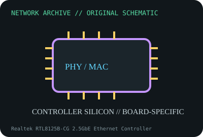

[ MODEL-SPECIFIC NETWORK HARDWARE ]
Realtek RTL8125B-CG 2.5GbE Ethernet Controller
Discrete single-port 2.5GbE controller used in onboard and add-in NIC implementations. Confirm exact product label and revision before applying specifications.

IDENTIFICATION: Confirm manufacturer PID, hardware revision, device ID or module suffix. Nominal standards/link rates are not measurements of payload performance.
Exact specifications and compatibility
| Dedicated subcategory | Ethernet controllers and PHYs |
|---|---|
| Exact product/model | Realtek RTL8125B-CG 2.5GbE Ethernet Controller |
| Bus, ports and physical interface | PCI Express host interface; board routes the controller PHY through isolation magnetics to one RJ-45 connector. |
| PHY, radio or protocol | Realtek RTL8125B family supports 2.5GBASE-T and 10/100/1000BASE-T Ethernet; board implementation and driver revision matter. |
| Nominal rate (not measured) | Up to 2.5Gb/s nominal link in a complete design; no stand-alone chip throughput result. |
| Measured throughput | No measured benchmark is claimed for a physical specimen. A valid result must record host/peer, link partner, media/cable, driver/firmware, traffic pattern, test tool and duration. |
| Drivers, OS and firmware | Realtek provides OS driver downloads; Linux r8169 support depends on kernel version, and OEM device IDs/NVM can affect features. |
| Compatibility | Requires reference-design-compliant clock, power, magnetics, port layout and correct device/driver ID; not a standalone network adapter. |
| Variant warning | RTL8125B-CG is not RTL8125BG, RTL8125BG-CG or RTL8125D; stepping and PCI IDs can affect driver detection and feature support. |
Model and revision notes
RTL8125B-CG is not RTL8125BG, RTL8125BG-CG or RTL8125D; stepping and PCI IDs can affect driver detection and feature support.
Realtek provides OS driver downloads; Linux r8169 support depends on kernel version, and OEM device IDs/NVM can affect features.
Requires reference-design-compliant clock, power, magnetics, port layout and correct device/driver ID; not a standalone network adapter.
Archival, ESD and preservation notes
Keep manufacturer reel/package label, date/lot code, stepping and host board. Use ESD-safe handling; no loose-chip powered tests without documented reference design.
Document source URL, access date, document revision and specimen label/condition. Preserve without credentials or private configuration.
Primary manufacturer and standards sources
- Realtek RTL8125 2.5GbE controller product pagePrimary manufacturer or standards documentation; verify exact SKU and host revision.
- Realtek network interface controller downloadsPrimary manufacturer or standards documentation; verify exact SKU and host revision.
- IEEE 802.3bz Ethernet standardsPrimary manufacturer or standards documentation; verify exact SKU and host revision.
Manufacturer statements cover the named part or its documented product family; the exact labeled revision and vendor compatibility list take precedence.